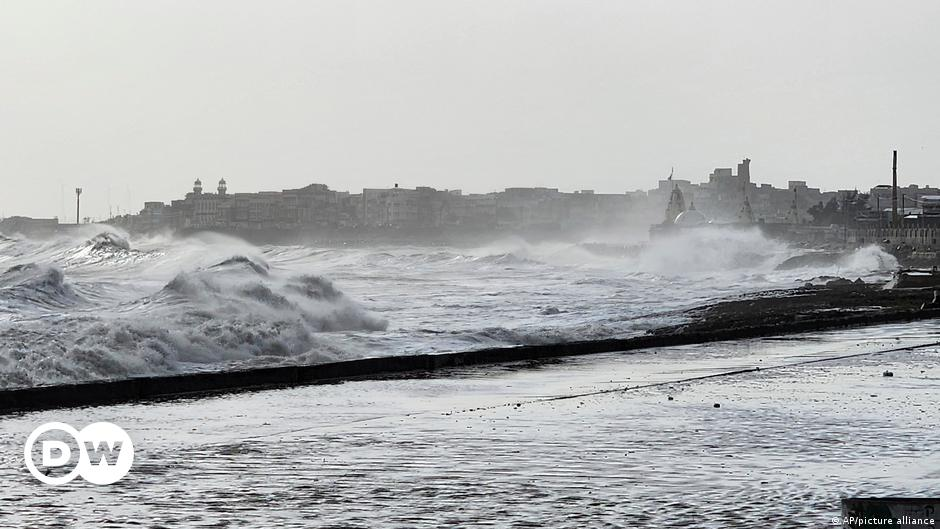

Evacuations in India and Pakistan as Cyclone Biparjoy Nears
Image Credits https://www.dw.com/en/evacuations-in-india-pakistan-as-cyclone-biparjoy-nears/a-65900675

As Cyclone Biparjoy gathers strength in the Arabian Sea, authorities in India and Pakistan are in the midst of evacuating tens of thousands of people from coastal areas. The cyclone is expected to hit Gujarat in India and Sindh in Pakistan in the coming days, bringing with it strong winds, heavy rainfall, and the possibility of flash floods and landslides.
Global Warming and More Severe Storms
This is not the first time that such weather events have occurred in the region. In recent years, there have been several devastating cyclones that have battered India and Pakistan, causing widespread damage and loss of life. Scientists have been warning that such storms are becoming more intense and frequent due to global warming.
A study published in the journal Nature Climate Change found that the intensity of cyclones in the Arabian Sea has increased by about 40% in the past four decades. The researchers attributed this to a warming of the sea surface temperature caused by global warming. Higher sea surface temperatures lead to more water vapor in the atmosphere, which in turn can fuel stronger storms.
Moreover, rising sea levels due to melting ice caps can exacerbate the damage caused by cyclones. As sea levels rise, coastal regions are becoming more vulnerable to flooding and storm surges. This can lead to widespread destruction of homes, infrastructure, and agricultural land.
Case Study: Cyclone Tauktae
One of the most devastating cyclones to hit India in recent years was Cyclone Tauktae, which made landfall in May 2021. The cyclone caused extensive damage in the states of Gujarat, Maharashtra, and Goa, claiming the lives of over 150 people and leaving thousands homeless.
The impact of the cyclone was compounded by the fact that it struck amidst the COVID-19 pandemic. Many hospitals and healthcare facilities in the affected areas were already overwhelmed by the surge in coronavirus cases, and the cyclone further disrupted the supply of medical oxygen and other essential supplies.
Cyclone Tauktae was fueled by warm sea surface temperatures and was one of the strongest to hit the region in over two decades. Its impact was worsened by the lack of preparedness and infrastructure in the affected areas.
Conclusion
- Global warming is making cyclones and other storms more intense and frequent.
- Cyclones can cause extensive damage to coastal regions, and rising sea levels due to global warming can further exacerbate the destruction.
- It is crucial for authorities to take proactive measures to prepare for such weather events and reduce their impact. This includes investing in early warning systems, evacuating people from high-risk areas, and building resilient infrastructure that can withstand storms and floods.
Curated by Team Akash.Mittal.Blog
Share on Twitter Share on LinkedIn